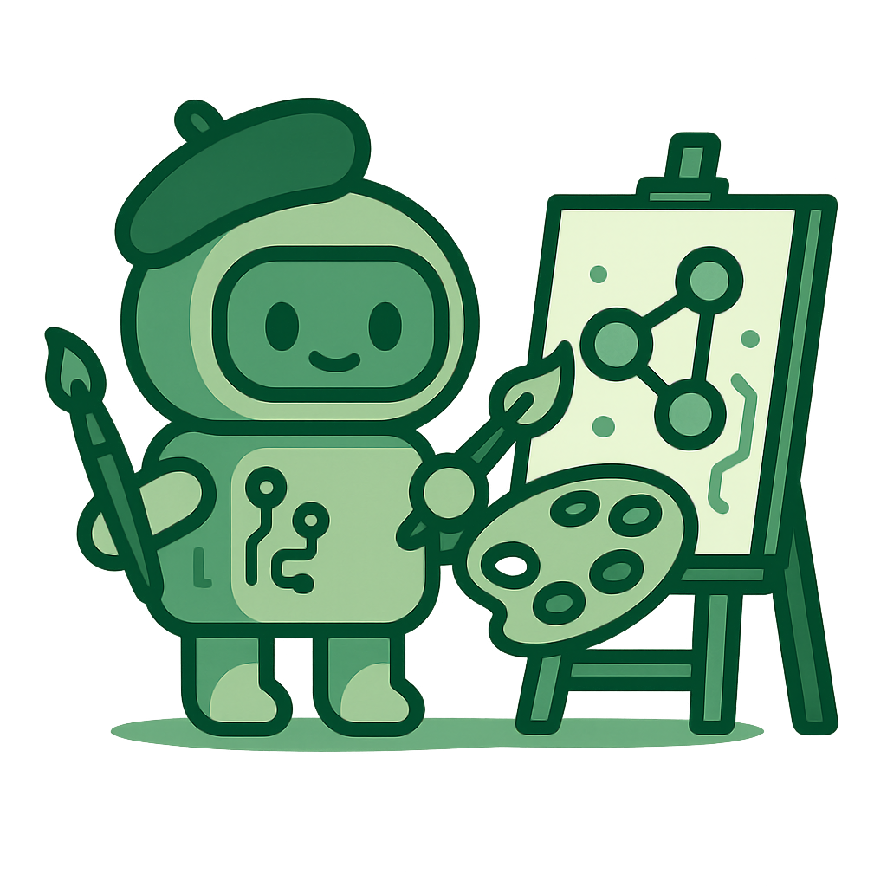

technický pojem
Generativní AI
Generative AI
Generativní AI dnes patří k nejčastěji zmiňovaným pojmům v souvislosti s umělou inteligencí. Pokud jste slyšeli o nástrojích jako ChatGPT nebo DALL·E, už jste se s ní setkali. Na rozdíl od klasických algoritmů, které hlavně rozpoznávají a třídí data, generativní AI dokáže vytvářet nový obsah – texty, obrázky, hudbu i kód.
Generativní AI označuje modely umělé inteligence navržené k tvorbě nových dat, která odpovídají vzorům naučeným z trénovacích sad. Na základě zadaného podnětu (promptu) mohou vygenerovat originální výstup, který působí realisticky a drží se kontextu. Typickými příklady jsou velké jazykové modely (LLM) pro generování textu, difuzní modely pro tvorbu obrazů a zvuku, nebo velké multimodální modely (LMM), které dokážou pracovat s více druhy vstupů současně – například kombinovat text, obraz a zvuk.
Jak se liší od jiné AI?
Klasická umělá inteligence byla po dlouhá léta zaměřená hlavně na rozpoznávání a klasifikaci – uměla například identifikovat obličej na fotografii, rozlišit druh dopisu nebo rozpoznat hlas uživatele. Tento přístup stojí na předem definovaných vzorech: model se učí, jak vypadá určitý objekt, a poté ho hledá ve vstupních datech.
Generativní AI představuje posun od rozpoznávání k tvorbě. Namísto otázky „co to je?“ se ptá „co by to mohlo být?“ – dokáže tedy vytvořit nový obraz člověka, který neexistuje, napsat text ve stylu konkrétního autora nebo složit hudební motiv podle zadaného popisu. V jádru se opírá o hluboké neuronové sítě, které se během trénování naučí vnímat skryté struktury dat – rytmus jazyka, kompozici obrazu, harmonii tónů – a poté tyto struktury využívají k tvorbě něčeho nového.
Rozdíl je také v cíli: tradiční modely se snaží maximalizovat přesnost, zatímco generativní modely hledají rovnováhu mezi věrností a kreativitou. To znamená, že výsledek nemusí být totožný s původními daty, ale působí přirozeně a konzistentně. Díky tomu mohou generativní systémy tvořit realistické, ale zcela originální výstupy – text, obraz i zvuk.
Jak vznikl dnešní boom?
Myšlenka generativního učení se objevila už v devadesátých letech, ale skutečný průlom nastal v roce 2014, kdy Ian Goodfellow představil Generative Adversarial Networks (GANs). Ty využívají princip soupeření dvou neuronových sítí – jedna tvoří a druhá hodnotí. Výsledkem je proces, který se postupně zlepšuje, až generované obrazy nebo zvuky začnou být nerozeznatelné od skutečných.
Na tento základ navázaly další technologie. Velké jazykové modely (LLMs) jako GPT přinesly schopnost pracovat s přirozeným jazykem, porozumět kontextu a tvořit smysluplné texty. Následně se objevily difuzní modely, které generují obraz nebo zvuk postupným odstraňováním šumu z náhodného signálu – tento princip využívají nástroje jako Stable Diffusion nebo DALL·E. Nejnovějším krokem jsou velké multimodální modely (LMMs), které spojují text, obraz, zvuk i video do jednoho systému a umožňují tak vytvářet komplexní interakce mezi různými typy dat.
Dnešní boom generativní AI je tedy výsledkem několika zralých technologií, obrovského množství tréninkových dat a výpočetního výkonu, který dříve nebyl dostupný. Není to náhlý zázrak, ale přirozený krok ve vývoji strojového učení – krok, který otevřel nové pole kreativity i automatizace.
Přehled typů generativních modelů a nástrojů
| Typ výstupu | Model / technologie | Příklady nástrojů |
|---|---|---|
| Text | Velké jazykové modely (LLM) | ChatGPT, Claude, Gemini, Mistral |
| Obraz | Difuzní modely | DALL·E, Midjourney, Stable Diffusion |
| Video | Velké multimodální modely (LMM) | Sora 2, Pika Labs, Runway ML |
| Hudba / zvuk | Generativní modely pro audio | Suno, Udio, MusicLM, Mubert |
| 3D / prostorová data | Generativní modely pro 3D syntézu | Point-E, Shap-E, Gaussian Splatting, Luma AI |
K čemu se používá?
Generativní AI se dnes uplatňuje napříč odvětvími – od umění až po veřejnou správu. V praxi to znamená, že stejný princip, který umožní napsat článek nebo vytvořit obraz, může pomoci také analyzovat a vytvářet administrativní texty, návrhy rozhodnutí nebo přehledné odpovědi pro občany.
V komerčním světě se generativní modely využívají pro návrh produktů, tvorbu marketingového obsahu, překlady, generování kódu či návrhy rozhraní. Ve výzkumu pomáhají simulovat chemické sloučeniny nebo modelovat nové materiály. A v úřadech mohou pomoci při přípravě shrnutí dokumentů, generování standardizovaných dopisů, vytváření školících textů či při komunikaci s občany v přirozeném jazyce.
Jejich přínos však nespočívá jen ve zrychlení práce, ale i v podpoře kreativity a v možnosti přetvářet složitá data do srozumitelných výstupů. Dobře navržené využití generativní AI dokáže snížit administrativní zátěž, zlepšit dostupnost informací a zpřehlednit služby, aniž by se ztratila lidská odpovědnost a kontrola.
Jak souvisí teplota s výstupem?
Při generování textu i obrázků lze ovlivnit chování modelu parametry, které řídí míru náhodnosti. Nejčastěji jde o teplotu (temperature) – číslo, které upravuje pravděpodobnost výběru dalšího slova nebo pixelu.
Nižší teplota (třeba 0,1–0,3) vede k konzervativním, opakovatelným odpovědím vhodným pro formální texty. Vyšší teplota (např. nad 0,7) naopak model „rozehřívá“, zvyšuje kreativitu a variabilitu výsledku, ale také riziko nepřesností. Nastavení teploty pomáhá úředníkům i dodavatelům trefit správnou rovnováhu mezi přesností a originalitou výstupů.
AI GRAMOTNOST
Proč to má znát i úředník?
Generativní AI netahá fakta z jedné „knihy pravdy“, ale skládá pravděpodobné pokračování textu, obrazu či kódu z toho, co se naučila. Umí tedy rychle navrhnout texty, sumarizace, odpovědi pro občany či návrhy podkladů, ale může sebevědomě vygenerovat i nepřesnost („halucinaci“).
Pro úředníka je klíčové vědět, k čemu je vhodná a k čemu ne: skvěle poslouží pro návrhy, šablony, shrnutí či kontrolní otázky, nikoli jako zdroj závazných právních výkladů. Vždy je nutná lidská kontrola, dohled nad zdroji a evidence toho, jak byl výstup použit.
Velmi zjednodušeně řečeno: generativní AI je „asistent pro návrhy“, nikoli „autorita na fakta“. Používáme ji k urychlení práce, ale rozhodnutí a odpovědnost zůstávají na úředníkovi.